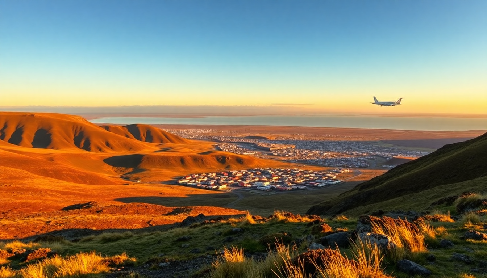

7-Day Iceland Itinerary: Reykjavik, Golden Circle & South Coast

I spent a week driving Iceland’s Ring Road from Reykjavik to Vik and back, hitting the Golden Circle along the way. This itinerary cuts the fluff — no chasing every waterfall until you’re numb. I’ll tell you which stops are worth your time, where we actually slept and ate, and what felt like a tourist trap.
Why drive the Golden Circle and South Coast in one week?
Seven days is tight but doable if you stay focused on the southwest corner. The Golden Circle (Thingvellir, Geysir, Gullfoss) is a half-day loop from Reykjavik. The South Coast to Vik adds another two days of waterfalls, black sand, and glacier views. We skipped the far north and Eastfjords — that’s a separate trip. Our base strategy: two nights in Reykjavik, one near Selfoss, two in Vik, then back to Reykjavik.
How do I get from the airport to Reykjavik?
Keflavik Airport is 45 minutes from downtown. We rented a 4x4 from Blue Car Rental at the terminal — booking ahead saved us about 30% compared to walk-up rates. The drive on Route 41 is straight, but wind gusts can push a small car around. If you’re not renting, Flybus runs coaches into the city for about 3,500 ISK per person, dropping at BSÍ Bus Terminal. We grabbed coffee at Reykjavik Roasters on the way to our hotel — their filter is solid.
What should I do on Day 1 and 2 in Reykjavik?
We stayed at Hotel Borg near Austurvöllur Square — old-school charm, creaky floors, but the location let us walk everywhere. Day 1 was jetlag recovery: we hit Hallgrímskirkja (pay the 1,000 ISK to go up the tower), then wandered Laugavegur for shopping. Kolaportið Flea Market on weekends has weird wool sweaters and fermented shark — try a sniff, skip the taste.
For food, Svarta Kaffið serves a mean lamb soup in a bread bowl. Bæjarins Beztu Pylsur is the famous hot dog stand — it’s fine, not life-changing, but cheap. Skip The Icelandic Bar — overpriced and touristy. Day 2 we did the Reykjavik Food Walk (booked through GetYourGuide) — three hours of sampling dried fish, rye bread ice cream, and local schnapps. Worth it for the context, not the portions.
How do I tackle the Golden Circle in one day?
Start early. We left Reykjavik at 8 AM and drove Route 36 to Thingvellir National Park. The Almannagjá rift valley is where the Eurasian and North American plates pull apart — you can walk between them. We spent an hour on the main trail; the Öxarárfoss waterfall is a short detour. Parking costs 750 ISK.
Next stop: Geysir. The original Geysir is dormant, but Strokkur erupts every 5-10 minutes. It’s crowded, but the timing is reliable. We ate lunch at Geysir Glima — overpriced sandwiches, but the geothermal bread soup was decent. Skip the gift shop.
Final stop: Gullfoss. The two-tier waterfall is massive. We walked the upper path first (less spray), then the lower trail to get soaked. Bring a waterproof jacket — even in July, the mist is cold. We stayed that night at Hotel Selfoss — basic rooms, but the restaurant’s lamb stew hit the spot after a long day.
What are the must-see stops between Selfoss and Vik?
The South Coast is a string of waterfalls and black sand. Drive Route 1 east. First stop: Seljalandsfoss — you can walk behind the waterfall, but you’ll get drenched. We wore rain pants and still regretted it. Five minutes down the road is Gljúfrabúi, a hidden waterfall inside a cave. Less crowded, more magical.
Next: Skógafoss. You can climb the stairs to the top — 527 steps — for a view of the coast. We skipped the climb and watched from below. The Skógar Museum next door has turf houses and old farm tools; 2,000 ISK entry, fine if you have an extra hour.
Lunch at Hótel Skógafoss restaurant — fish and chips that weren’t bad. Then drive to Reynisfjara Black Sand Beach. The basalt columns and roaring waves are stunning, but the “sneaker waves” are no joke. We saw a tourist get soaked up to the waist. Stay well back from the waterline. Dyrhólaey arch is a short detour — good photo spot, but the road is gravel and narrow.
Where should I stay and eat in Vik?
We booked two nights at Hotel Kría — modern, clean, and steps from the main road. The breakfast buffet had skyr, smoked trout, and decent bread. For dinner, Suður-Vík served lamb and arctic char — the char was perfectly cooked. The Soup Company is a cheaper option: bread bowls with lamb or seafood soup, filling and fast.
Day 4 we drove to Fjaðrárgljúfur Canyon — about an hour east of Vik. The canyon is a green mossy gorge with a walking path along the rim. It’s free, but the parking lot fills by 10 AM. Go early. On the way back, we stopped at Foss á Siðu — a small waterfall right off Route 1 that nobody visits. Worth a 5-minute pull-off.
Can I see glaciers and ice caves on this route?
Yes, but you need a tour. We booked a Glacier Walk on Sólheimajökull through GetYourGuide — about 3 hours on the ice with crampons and a guide. It’s not cheap (around 12,000 ISK), but walking on a glacier is surreal. The guide pointed out crevasses and meltwater streams. Wear sturdy boots — they rent them if you don’t have any.
For ice caves, you’d need to go further east to Jökulsárlón glacier lagoon, which is 4 hours from Vik. We didn’t have time this trip. If you do, Crystal Ice Cave tours run from November to March only. Summer ice caves are dangerous and closed.
What should I do on the last day driving back to Reykjavik?
We took the coastal route back via Hveragerði — a small town with geothermal greenhouses. Ölverk Pizza & Brewery serves pizza baked in geothermal ovens and house-brewed beer. The “Icelandic” pizza with lamb and mushrooms was excellent. Then we hit Kerið Crater — a volcanic crater lake with red rock walls. 400 ISK entry, 15 minutes to walk the rim.
We spent our final night at Icelandair Hotel Marina in Reykjavik — more modern than Hotel Borg, with a harbor view. Dinner at Matur og Drykkur for traditional Icelandic food done well: fermented rye bread ice cream and cured lamb. Book ahead.
FAQ
Is the Golden Circle worth doing if I only have one day? Yes, but drive it clockwise (Gullfoss first, then Geysir, then Thingvellir) to avoid the tour bus crowds. We did it the standard way and hit traffic at Geysir around noon. Clockwise would have been quieter.
Can I see the Northern Lights on this itinerary? Only from September to April. We visited in July and saw midnight sun instead — no aurora. If you’re chasing lights, stay in Vik or near Kirkjubæjarklaustur for darker skies. Book a tour from Reykjavik if your timing is tight.
How much cash do I need for a week in Iceland? Almost everything takes credit cards, even street food vendors. We used 5,000 ISK in cash total for tolls and a few small shops. No need for an ATM run at the airport.
Conclusion
- Rent a 4x4 from Blue Car Rental and book it at least a month ahead.
- Stay at Hotel Kría in Vik and Hotel Selfoss on the Golden Circle loop.
- Eat at Svarta Kaffið in Reykjavik and Ölverk Pizza in Hveragerði.
- Skip The Icelandic Bar and the Geysir gift shop — both overhyped.
- Book glacier walks and food tours through GetYourGuide for reliable operators and free cancellation.